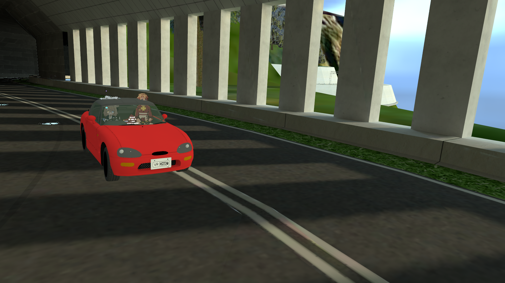

ProjectT
以臺灣道路與地景創作為核心，連結可探索的 VR 世界、地方內容與賽車社群。
Explorable VR worlds, place-based stories, and a racing community grounded in Taiwanese roads and landscapes.
從地景創作進入臺灣，也從玩家留下的路線與紀錄持續理解這些世界。
Enter Taiwan through landscape creation, then keep reading the worlds through the routes and records left by players.
代表世界Featured Worlds

StarSight Mt. 觀星山
以臺灣山道氛圍為基礎的可駕駛 VRChat 世界，也是 ProjectT 目前的代表場景。
A drivable VRChat world shaped by the atmosphere of Taiwanese mountain roads and the current featured scene for ProjectT.
查看專案View Project
九彎十八拐9 Turns
以臺 9 線石牌至頭城段為基礎，轉譯成可駕駛與探索的 VR 地景。
A drivable VR landscape based on Provincial Highway 9 from Shipai to Toucheng.
查看專案View Project社群與紀錄Community & Records
Racing Club
ProjectT 的賽車俱樂部入口，將逐步承接活動、世界介紹、地圖與社群內容。
The ProjectT racing-club entry for events, world guides, maps, and community content.
進入俱樂部Enter ClubTime Attack
持續更新的賽道、玩家、車輛與計時紀錄資料庫。
A continuously updated database of tracks, players, vehicles, and timed runs.
開啟紀錄站Open Records